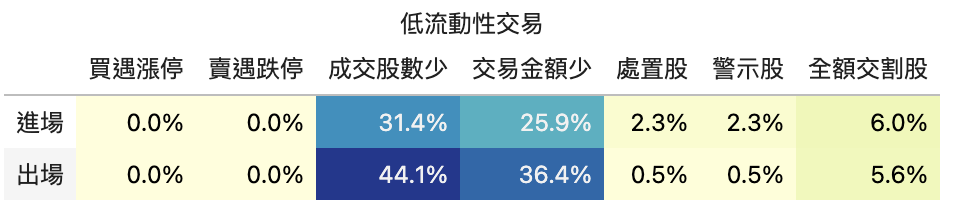
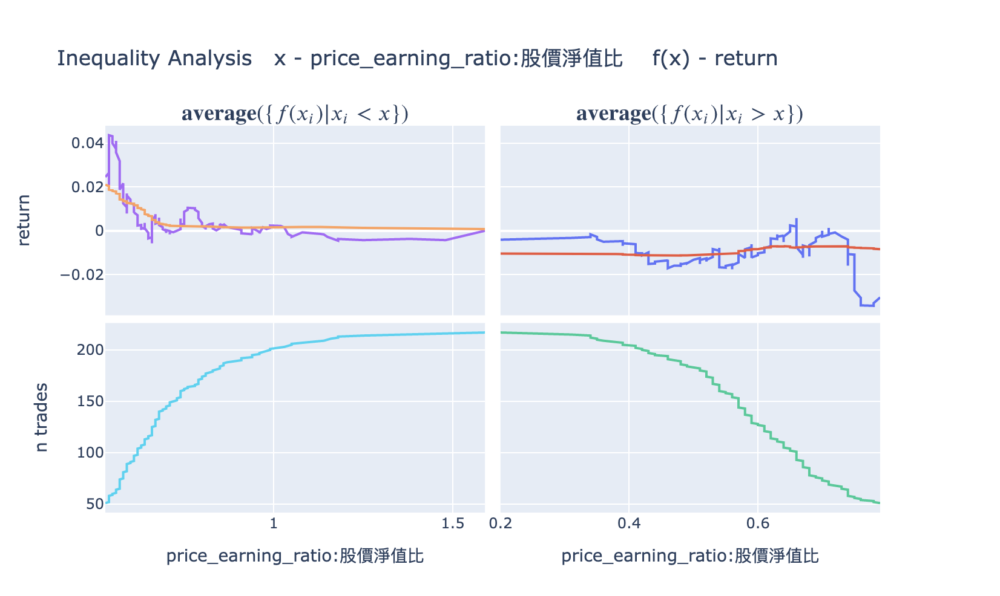

策略分析模組
回測完成後,僅看累積報酬曲線和夏普率可能不夠全面。finlab.analysis 模組提供了 6 種內建分析工具,從流動性風險、波動特性、時期穩定性等多個角度深入評估策略品質,幫助你做出更明智的交易決策。
概述
FinLab 內建以下 6 種分析模組:
| 模組 | 用途 | 適用場景 |
|---|---|---|
| LiquidityAnalysis | 流動性風險檢測 | 大資金策略、低流動性標的 |
| MaeMfeAnalysis | 波動分析(MAE/MFE) | 優化停損停利、了解策略特性 |
| PeriodStatsAnalysis | 時期穩定性分析 | 檢視年度、月度、近期表現 |
| InequalityAnalysis | 不等式因子分析 | 檢查策略是否依賴特定股票 |
| AlphaBetaAnalysis | Alpha/Beta 分析 | 衡量超額報酬與市場相關性 |
| DrawdownAnalysis | 回撤分析 | 了解最大回撤的時間與幅度 |
基本用法
所有分析模組都使用相同的呼叫方式:
from finlab import data
from finlab.backtest import sim
# 完成回測
close = data.get('price:收盤價')
position = close > close.average(20)
report = sim(position, resample='M')
# 執行分析 - 方法 1: 使用模組名稱(字串)
report.run_analysis('LiquidityAnalysis', required_volume=100000)
# 執行分析 - 方法 2: 使用模組實例
from finlab.analysis.liquidityAnalysis import LiquidityAnalysis
report.run_analysis(LiquidityAnalysis(required_volume=100000))
推薦使用方法 1
直接傳入模組名稱(字串)更簡潔,且 FinLab 會自動處理模組載入。
1. LiquidityAnalysis - 流動性風險檢測
功能說明
檢測策略在進出場時是否會遇到流動性問題,包括:
- 成交量不足: 單日成交股數低於要求
- 成交金額不足: 單日成交金額低於要求
- 漲跌停板: 在漲停買入或跌停賣出(無法成交)
- 警示股/處置股/全額交割股: 交易受限的高風險標的
參數說明
LiquidityAnalysis(
required_volume=200000, # 要求單日成交股數(預設 20 萬股)
required_turnover=1000000 # 要求單日成交金額(預設 100 萬元)
)
使用範例

輸出解讀
表格顯示各風險項目在進場(entry)和出場(exit)時發生的機率:
| 風險項目 | entry | exit | 說明 |
|---|---|---|---|
| buy_high | 5.2% | 1.3% | 在漲停板(或接近漲停)買入的比例 |
| sell_low | 0.8% | 4.5% | 在跌停板(或接近跌停)賣出的比例 |
| low_volume_stocks | 12.1% | 10.3% | 成交股數不足要求的比例 |
| low_turnover_stocks | 8.7% | 7.2% | 成交金額不足要求的比例 |
| 警示股 | 2.1% | 1.8% | 交易警示股的比例 |
| 處置股 | 0.5% | 0.3% | 交易處置股的比例 |
| 全額交割股 | 0.2% | 0.1% | 交易全額交割股的比例 |
風險閾值建議
buy_high或sell_low> 10%: 可能無法順利成交low_volume_stocks> 20%: 大資金可能無法全部執行處置股> 5%: 策略可能專挑高風險標的
決策建議
- 流動性不足: 考慮增加選股條件(如「成交量 > 1000 張」)
- 頻繁觸及漲跌停: 調整進出場時機(如使用開盤價而非收盤價)
- 過多警示/處置股: 加入風控條件排除高風險標的
2. MaeMfeAnalysis - 波動分析
功能說明
MAE/MFE 分析是優化停損停利的核心工具:
- MAE (Maximum Adverse Excursion): 持有期間最大不利方向幅度(最大虧損)
- BMFE (Before-MAE MFE): MAE 發生前的最大有利方向幅度
- GMFE (Global MFE): 持有期間最大有利方向幅度(最大獲利)
- MDD (Maximum Drawdown): 持有期間最大回撤
透過 12 個子圖,全面了解每筆交易的波動特性。
參數說明
MaeMfeAnalysis(
violinmode='group', # violin 圖模式: 'group' 或 'overlay'
mfe_scatter_x='mae' # MFE 散點圖的 X 軸: 'mae' 或 'return'
)
使用範例
# 方法 1: 使用 display_mae_mfe_analysis() 快捷方法
report.display_mae_mfe_analysis()
# 方法 2: 使用 run_analysis()
report.run_analysis('MaeMfeAnalysis', violinmode='group')

12 個子圖說明
第一排
- Win Ratio: 交易勝率分布(profit vs loss 直方圖)
- 藍色:獲利交易,粉色:虧損交易
-
綠色虛線:平均報酬率
-
Edge Ratio: 不同持有天數的 MFE/MAE 比率
- 數值 > 1 代表獲利幅度大於虧損幅度
-
觀察策略的「優勢時間區間」
-
MAE vs Return: MAE 與最終報酬率的關係
- 水平虛線:MAE 的 75 分位數(Q3)
- 用於設定停損點
第二排
- GMFE vs MAE: 最大獲利 vs 最大虧損
- Q3 虛線:75% 交易的 GMFE 和 MAE 範圍
-
用於評估停利空間
-
BMFE vs MAE: MAE 前的最大獲利
- 數值越高,代表越有機會在停損前先停利
-
用於優化「移動停利」策略
-
MDD vs GMFE: 最大回撤 vs 最大獲利
- 橘線:MDD = GMFE 的基準線
- 點在線下方:GMFE > MDD(好訊號,可用移動停利)
- 點在線上方:MDD > GMFE(壞訊號,會錯失獲利)
第三排
7-9. MAE/BMFE/GMFE Distribution: 各指標的分布與密度 - 直方圖 + 密度曲線 - 藍色:獲利交易,粉色:虧損交易 - Q3 虛線:75 分位數
第四排
- Indices Stats (Violin Plot): 6 個關鍵指標的統計分布
- return, mae, bmfe, gmfe, mdd, pdays_ratio
- group 模式: 分群顯示獲利/虧損交易的差異(推薦)
- overlay 模式: 疊加顯示所有交易
決策建議
根據 MAE/MFE 分析優化停損停利:
停損點設定
# 1. 查看 MAE 的 75 分位數(Q3)
trades = report.get_trades()
mae_q3 = trades['mae'].quantile(0.75) # 例如 -8.5%
# 2. 設定停損略寬於 Q3,避免過度停損
stop_loss = abs(mae_q3) * 1.2 # 設為 10%
停利點設定
# 查看 GMFE 的 75 分位數
gmfe_q3 = trades['gmfe'].quantile(0.75) # 例如 15%
# 設定停利
take_profit = gmfe_q3 * 0.8 # 設為 12%,確保大部分獲利能實現
移動停利判斷
若「MDD vs GMFE」圖中顯示:
- Missed Win-profits PCT < 20%: 適合使用移動停利
- Missed Win-profits PCT > 40%: 不適合移動停利(會提前出場錯失更大獲利)
# 使用移動停利（透過 sim() 的 trail_stop 參數）
position = position.hold_until(
exit=exits,
stop_loss=0.1
)
report = sim(position, resample='M', trail_stop=0.08) # 回檔 8% 即出場
3. PeriodStatsAnalysis - 時期穩定性分析
功能說明
分析策略在不同時期(年度、月度、近期)的表現,並與對照指數(benchmark)比較,檢驗策略是否穩定。
使用範例
輸出解讀
會產生多個表格,包含:
1. Overall Stats(整體表現)
比較策略與 benchmark 在日度、月度、年度的整體指標:
| 指標 | benchmark | strategy |
|---|---|---|
overall_daily / calmar_ratio |
0.149 | 0.066 |
overall_daily / sharpe_ratio |
0.532 | 0.306 |
overall_monthly / return |
0.084 | 0.048 |
2. Yearly Stats(年度表現)
熱力圖顯示每年的 7 種指標(calmar_ratio, sharpe_ratio, return, volatility 等)。
3. Recent Stats(近期表現)
顯示最近 M(月)、Q(季)、HY(半年)、Y(年)、3Y(三年)的表現。
決策建議
- 策略 sharpe_ratio < benchmark: 策略風險調整後報酬不如大盤,需改進
- 某些年度表現特別差: 檢查是否遇到特定市場環境(如空頭)
- 近期表現大幅衰退: 策略可能失效,需重新優化
4. InequalityAnalysis - 不等式因子分析
功能說明
檢查策略的報酬是否過度集中在少數股票,評估策略的穩健性。

使用範例
輸出解讀
產生兩個圖表:
- Cumulative Returns by Stock: 各股票的累積貢獻曲線
-
若曲線在前 10% 股票就達到 80%,代表報酬過度集中
-
Gini Coefficient: 基尼係數(0-1)
- 接近 0: 報酬均勻分布(好)
- 接近 1: 報酬極度集中(風險高)
決策建議
- Gini > 0.7: 策略過度依賴少數股票,需分散風險
- 前 5% 股票貢獻 > 50% 報酬: 移除這些股票測試策略穩健性
5. AlphaBetaAnalysis - Alpha/Beta 分析
功能說明
衡量策略相對於對照指數的:
- Alpha (α): 超額報酬(策略獨特的價值)
- Beta (β): 市場敏感度(與大盤的相關性)
使用範例
輸出解讀
| 指標 | 數值 | 說明 |
|---|---|---|
| Alpha | 0.05 | 年化超額報酬 5%(扣除市場風險後的真實貢獻) |
| Beta | 0.8 | 市場上漲 1%,策略預期上漲 0.8% |
決策建議
- Alpha > 0: 策略有超額報酬,值得執行
- Alpha < 0: 策略不如對照指數,需改進
- Beta > 1.5: 策略波動極大,風險高
- Beta < 0: 策略與市場負相關(適合避險)
6. DrawdownAnalysis - 回撤分析
功能說明
詳細分析策略的所有回撤事件,了解:
- 最大回撤幅度與發生時間
- 平均回撤幅度
- 回撤持續時間
使用範例
輸出解讀
產生表格與圖表:
- Drawdown Events Table: 所有回撤事件的詳細資訊
- start_date: 回撤開始日期
- end_date: 回撤結束日期
- duration: 持續天數
-
max_dd: 最大回撤幅度
-
Drawdown Plot: 回撤時序圖
決策建議
- 最大回撤 > -50%: 風險過高,需增加風控措施
- 回撤持續時間 > 1 年: 策略可能長期失效
- 近期回撤頻繁: 市場環境改變,需重新評估策略
自訂分析模組
如果內建分析無法滿足需求,可繼承 Analysis 類別開發自訂分析。
基礎範例:產業分析
分析每筆交易所屬的產業:
from finlab import data
from finlab.analysis import Analysis
class IndustryAnalysis(Analysis):
def calculate_trade_info(self, report):
"""計算每筆交易的產業資訊"""
industry = data.get('etl:industry')
return [
['產業', industry, 'entry_sig_date']
]
def analyze(self, report):
"""分析產業分布"""
trades = report.get_trades()
industry_return = trades.groupby('產業@entry_sig_date')['return'].agg(['count', 'mean'])
self.result = industry_return.sort_values('mean', ascending=False)
return self.result.to_dict()
def display(self):
"""顯示分析結果"""
return self.result
# 使用自訂分析
report.run_analysis(IndustryAnalysis())
進階範例:月度勝率分析
分析每個月份的勝率是否有差異:
class MonthlyWinRateAnalysis(Analysis):
def analyze(self, report):
trades = report.get_trades()
trades['entry_month'] = pd.to_datetime(trades['entry_date']).dt.month
monthly_stats = trades.groupby('entry_month').agg({
'return': ['count', lambda x: (x > 0).mean(), 'mean']
}).round(3)
monthly_stats.columns = ['交易次數', '勝率', '平均報酬']
self.result = monthly_stats
return self.result.to_dict()
def display(self):
import plotly.express as px
fig = px.bar(self.result, y='勝率', title='月度勝率分析')
return fig
# 使用
report.run_analysis(MonthlyWinRateAnalysis())
Analysis 類別 API
繼承 Analysis 類別時,可覆寫以下方法:
class Analysis:
def is_market_supported(self, market):
"""檢查是否支援該市場
Returns:
bool: True 表示支援,False 表示不支援
"""
return True
def calculate_trade_info(self, report):
"""計算額外的交易資訊
Returns:
list: 格式為 [[欄位名, 資料 DataFrame, 使用的日期欄位], ...]
Examples:
return [
['產業', industry_data, 'entry_sig_date'],
['市值', market_cap, 'entry_date']
]
"""
return []
def analyze(self, report):
"""執行分析邏輯
Args:
report: 回測報告物件
Returns:
dict: 分析結果(用於上傳至雲端)
"""
pass
def display(self):
"""顯示分析結果
Returns:
可視化物件(推薦使用 Plotly Figure 或 Pandas Styler)
"""
pass
calculate_trade_info 的作用
calculate_trade_info() 會在 analyze() 之前執行,自動將額外資訊加入 report.get_trades() 的 DataFrame。
例如回傳 [['產業', industry, 'entry_sig_date']],則 trades 會新增 '產業@entry_sig_date' 欄位。
組合使用多個分析模組
實務上,建議同時執行多個分析:
from finlab import data
from finlab.backtest import sim
# 完成回測
close = data.get('price:收盤價')
position = close > close.average(20)
report = sim(position, resample='M')
# 1. 流動性檢測
report.run_analysis('LiquidityAnalysis', required_volume=100000)
# 2. 波動分析
report.display_mae_mfe_analysis()
# 3. 時期穩定性分析
report.run_analysis('PeriodStatsAnalysis')
# 4. Alpha/Beta 分析
report.run_analysis('AlphaBetaAnalysis')
# 5. 自訂產業分析
report.run_analysis(IndustryAnalysis())
最佳實踐
1. 標準分析流程
每個策略回測後,建議執行以下檢查:
# Step 1: 基本績效檢視
report.display()
# Step 2: 流動性風險(大資金必檢)
if capital > 1000000:
report.run_analysis('LiquidityAnalysis', required_volume=100000)
# Step 3: 波動分析(必做,用於優化停損停利)
report.display_mae_mfe_analysis()
# Step 4: 時期穩定性(檢視長期穩定性)
report.run_analysis('PeriodStatsAnalysis')
# Step 5: Alpha/Beta(檢視是否有超額報酬)
report.run_analysis('AlphaBetaAnalysis')
2. 針對不同策略類型的分析重點
| 策略類型 | 重點分析模組 |
|---|---|
| 短線交易(日內、週線) | MaeMfeAnalysis(優化停損停利) |
| 長線投資(月線、季線) | PeriodStatsAnalysis(檢視長期穩定性) |
| 大資金策略(> 1000 萬) | LiquidityAnalysis(避免流動性風險) |
| 市場中性策略 | AlphaBetaAnalysis(確認 Beta 接近 0) |
| 高頻交易 | DrawdownAnalysis(確認回撤可控) |
3. 分析結果的決策樹
回測完成
├─ 流動性風險 > 20%?
│ ├─ 是 → 增加成交量篩選條件
│ └─ 否 → 繼續
├─ 夏普率 < 1?
│ ├─ 是 → 優化選股條件或停損停利
│ └─ 否 → 繼續
├─ 最大回撤 > -30%?
│ ├─ 是 → 增加風控措施(停損、部位控制)
│ └─ 否 → 繼續
├─ Alpha < 0?
│ ├─ 是 → 策略無超額報酬,需重新設計
│ └─ 否 → 繼續
└─ 所有檢查通過 → 進行樣本外測試